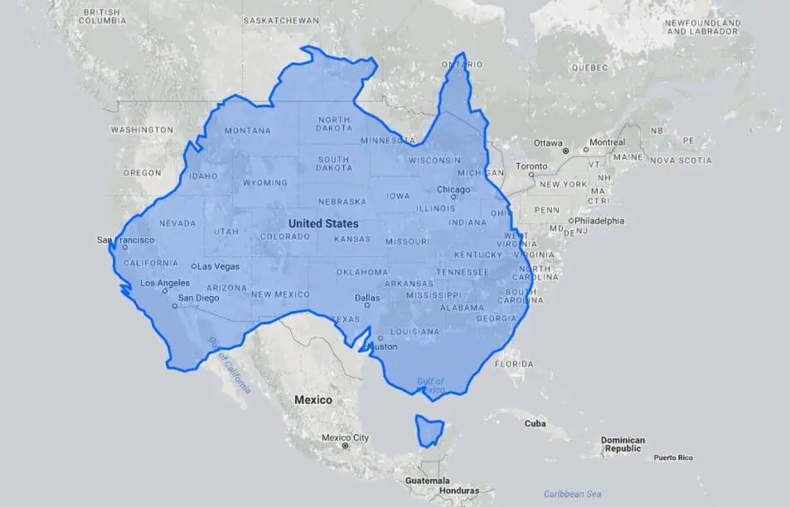
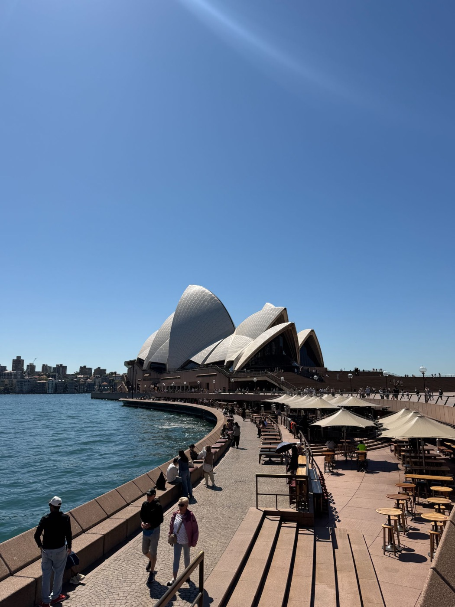
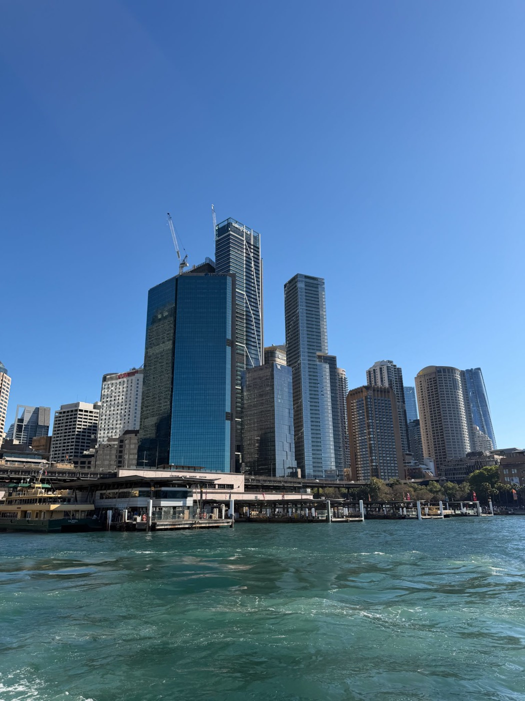

Introduction to Australia
Description
Australia is a beautiful and relatively newer country compared to the United States of America. Although Aboriginal and Indigenous Australians have been in Australia for the past ~65,000 years, the country of Australia was founded on January 1st, 1901, compared to July 4th, 1776. Native Americans in North America have been living on the land for roughly ~23,000 years.
The size of Australia is very similar to the U.S.; being slightly larger is really intriguing, but once you account for the population of these two countries vast immensely. The population estimates from Dr. Jones’ lecture show vast differences in population size, with Australia being ~26 million compared to ~333 million in the U.S., roughly 1/10 the size of America.
The diversity of both countries is similar in both countries, with both countries having a lot of people coming from overseas and a lot of multiculturalism. Australia is one of the longest continuous cultures in the world, dating back to Indigenous Australians. The Aboriginal and Torres Strait Islander peoples are the two distinct cultural groups of Indigenous Australia. The Torres Strait Islander group comes from the Torres Strait Islands, which are between Northern Queensland, Australia, and Papua New Guinea. The Aboriginal people come from the mainland of Australia and Tasmania.



Personal reflection
My first time ever in Australia has been off to a great start. As we are about a week into our study abroad program, I have learned so much and keep asking myself questions about basic information about Australia and the history of this beautiful place.
It was shocking to me on our first day of Australian Studies; I learned so much I never knew before and can see some resemblance to my home country, which is the United States of America. My first-ever thoughts of Australia go straight to the Sydney Opera House, which is an Australian staple. The gorgeous architecture of this building is a unique, one-of-a-kind performing arts venue that brings people from all over the world. It was super cool that we had the opportunity to go inside the Opera House and watch the play Houseworks. I had such an amazing time, and the play was super cool learning about the Westminster system and the monarchy.
I was shocked to learn about the introduction to Australia, learning about the landscape and population of Australia. I was not too surprised about the similar landmass for both countries, but I was shocked to learn that Australia’s population is about 1/10 of the U.S.’s population. For both countries being similar in size, it amazes me how vast the difference is in population.